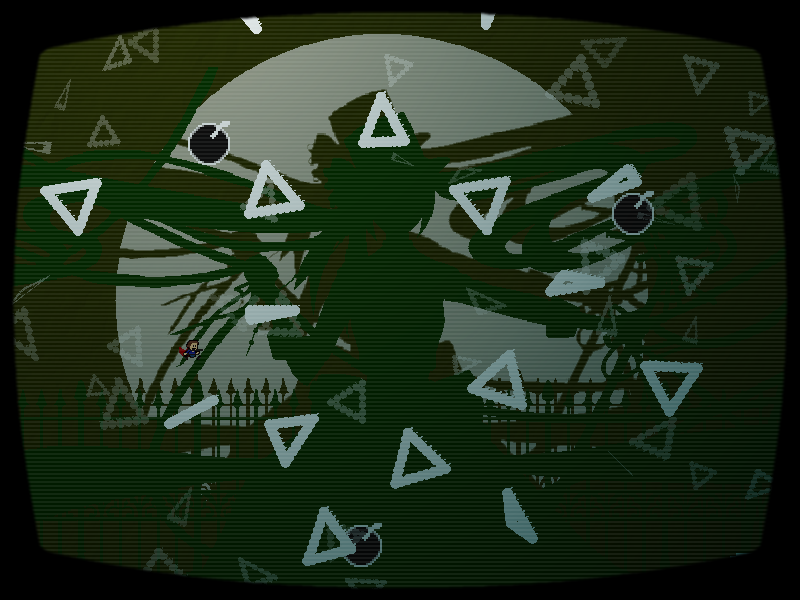
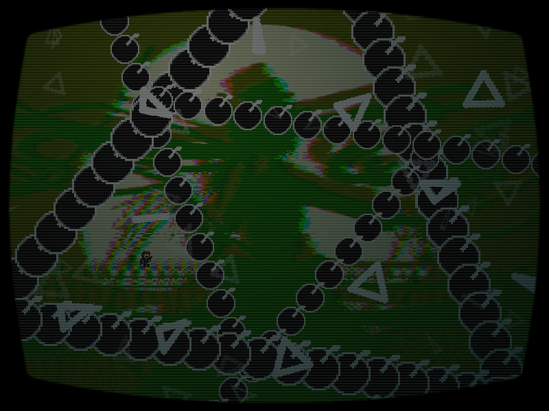

chapter3 - section3

| creator | segment | label | jump |
|---|---|---|---|
| yuzuyu(main) NN(supervise) |
0:33.80~0:36.60 | R | infinite |
2種類の角度がランダムな弾幕です。
0:33.80~0:36.20における黒色弾幕の位置関係（fig.3-3.1.a）から、0:36.20以降に形成される空間（fig.3-3.1.b）を予測することを目的としています。
また、0:33.80において画面中央から生成される三角形弾幕に関して、これらはそれぞれ各時刻において横幅の最大値が中心とプレイヤーとの距離によって決定されます。

